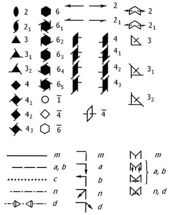

Символы элементов (групп) симметрии (Ru).
Tabiiy fanlarda qabil qilingan simmetriya elementlarini va simmetriya guruhlarini, harfli, raqamli va/yoki grafikli belgilanishlari. Eng keng tarqalgan ikkita belgilansihlar tizimi mavjud: 1) Shyonflis (A. Schoenflies, 1981, 1923) - fizikada va kimyoda; 2) Germann-Mogen (S. Hermann, S. Mauguin, 1928-1931) yoki xalqaro - kristallografiyada va kristallkimyoda. Ushbu tizimlarga muvofiq yopiq simmetriya elementlarining belgilanishi jadvalda berilgan. Ochiq simmetriya elementlari, Brave yacheykalari va fazoviy simmetriya guruhlari xalqaro belgilar bilan belgilanadi: 21, 31, 32, 41, 42, 43, 61, 62, 63, 64, 65 – vintli o’qlar; P - primitiv yacheyka, A, B, C - yonmarkazli yacheyka, I – hajmiy markazlashgan, R – romboedrik yacheyka F – yoqlari markazlashgan yacheyka; a, b, c, n, d – sirpanuvchi aks ettirish tekisligi. Simmetriya guruhlarining Shyonflis belgilanishda - yuqori tartibli o’qlarga nisbatan simmetriya elementlarining holatlariga, halqaro belgilanishida esa – kristallografik koordinata tizimiga nisbatan simmetriya elementlari holatlariga (perpendikulyar parallel yoki diagonal) e’tibor qaratiladi. Kristallografik simmetriya elementlarining grafikli belgilanishi 32 rasmda berilgan.
| Simmetriya elementi | Buralish o’qi | Inversion o’q | Ko’zguli o’q | Inversiya markazi | Ko’zguli tekislik |
|---|---|---|---|---|---|
| Shyonfli bo’yicha | Cn | - | Sn | i | σ |
| Halqaro belgilanish bo’yicha | N | n | - | 1 | m |

32-rasm. Kristallografik simmetriya elementlarini halqaro belgilanishi